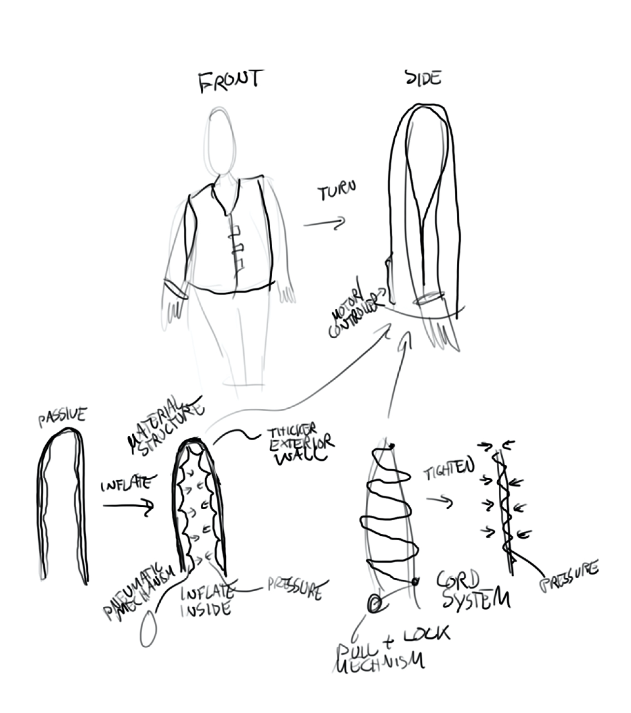
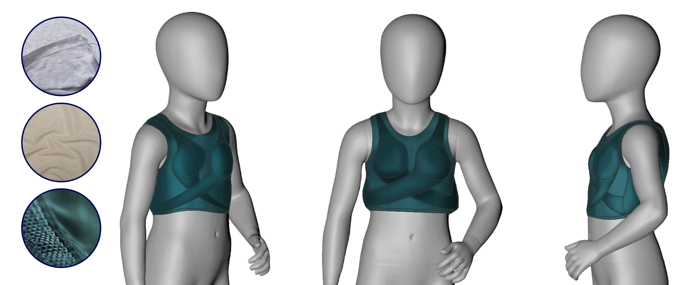
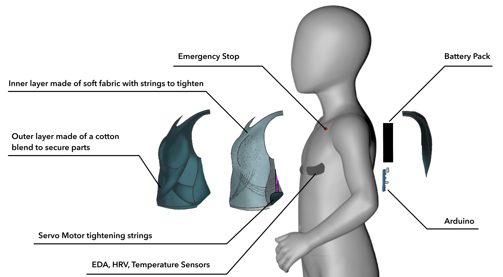
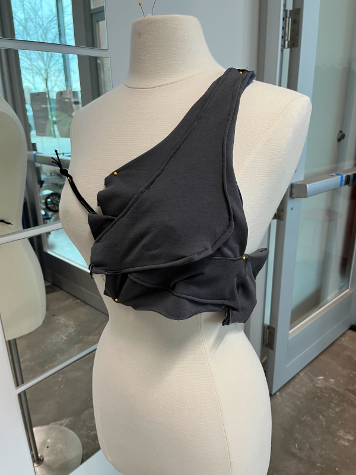
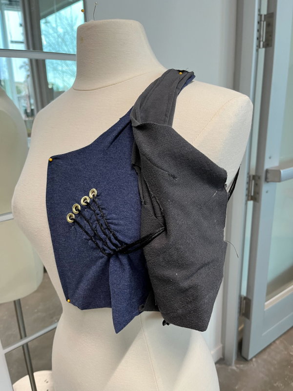
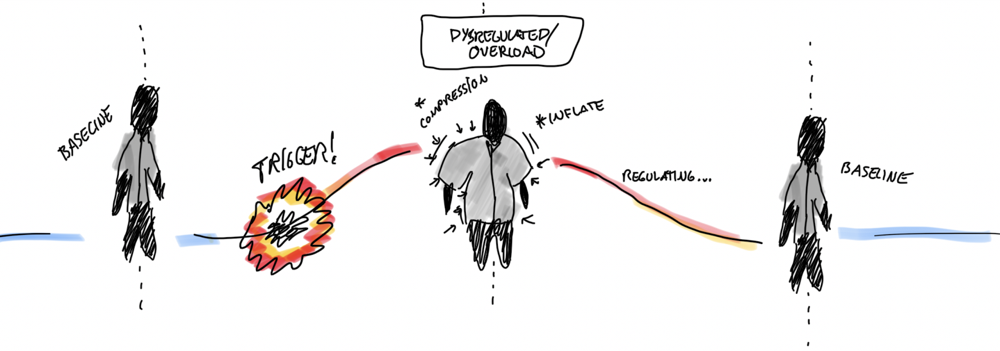
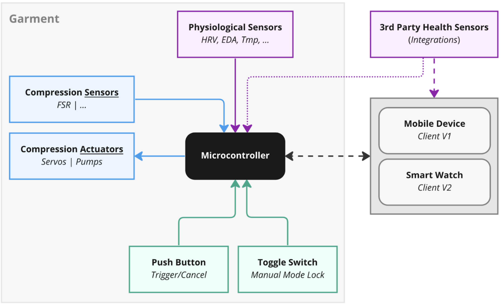
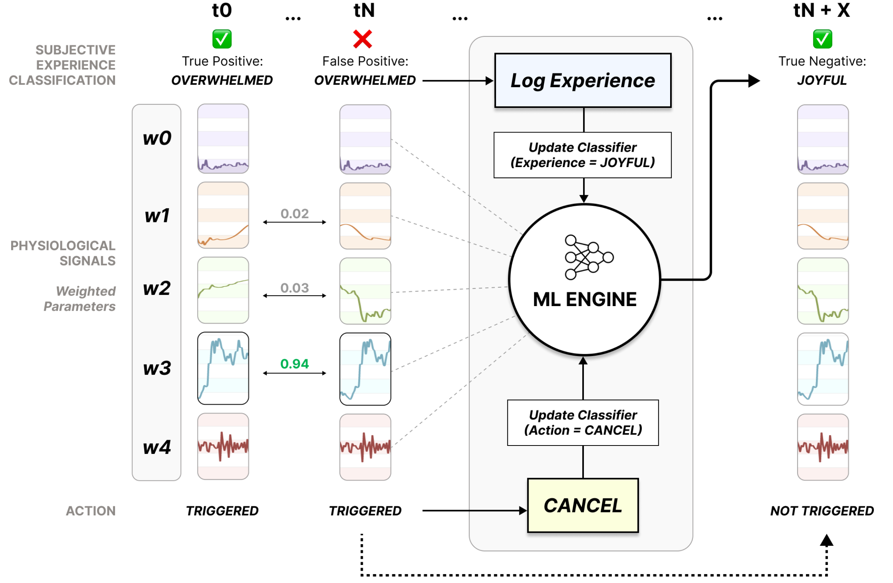

SuperVest: Compression Vest for Autism Spectrum Disorders
3D Modeling + UI/UX Design

Children diagnosed with Level 3 Autism Spectrum Disorder (ASD) are at higher risk of becoming emotionally dysregulated when switching between activities, or when exposed to overstimulating environments. These moments can be difficult to detect, pre-empt, and manage, and are equally challenging for caregivers who might intervene to interrupt the behavior transition.
UI/UX Designer
Research
Tools
There is room for intervention for a garment that can respond to an autistic child’s emotions immediately by providing comfort and decreasing anxiety.
If young children with autism receive comfort in the form of pressure, they will feel more instantaneous relief during an “autistic meltdown” so that they are more confident during these episodes in the future.
Students in Early Education with Level 3 Autism Spectrum Disorders


Rough Early Sketches
Sketches

3D-Printed Models

Precedents

Prototypes

Prototyping Iterations

Looks-Like Prototype
Exploded View of Looks-Like Prototype
Materials & Instructions

Sketch of the Vest

Compression of the Vest

Outside of the Physical Looks-Like Prototype
Inside of the Physical Looks-Like Prototype
How it Works
System Architecture
Component Map

Component Wiring

Sensor Data Streaming

Functional Design - Signal Ingestion & Garment Actuation

Smart Compression Learning Algorithm
